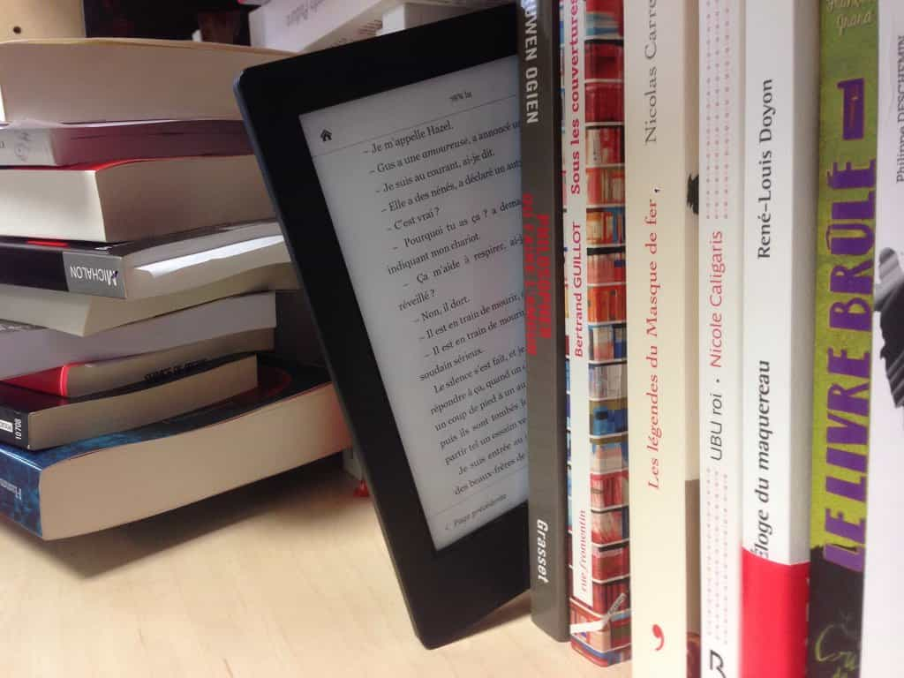

Kyle is an entrepreneur and nomad who has been living abroad since 2016. He blogs at This Is Trouble. Follow him on Facebook.


Writing your own eBook is all the rage these days. For better or worse, the digital publishing market has exploded in recent years. The ease of use of some of the tools by digital publishers like Amazon have essentially removed any and all barriers to entry to publishing a book.
Sure, said traditional publishers are still on the market but they are ultimately no longer needed. Any Average Joe can now bring his work and sell it on the internet. On one hand, this is great. Many self published authors who traditional companies never would, or didn’t, put their weight behind now have a platform. The world is better with their work out there. Plus, it sure as hell beats freelancing.
On the flip side, like I said—every Average Joe can put a book out. As a modestly successful author these days I thought I’d share my thoughts on how one could get started.

This is the biggest point—you’ve got to actually create something. I’ve gone into great detail about how to accomplish writing 10,000 words in a day in this post, but here they are in a nutshell:

Digital delivery companies such as DPD and E-Junkie make it very easy to deliver the content yourself. I’ve seen borderline computer-illiterate folks figure it out in a couple of hours.
You don’t need to muck around with installing an SSL certificate on your site, or figuring out how to take a credit card payment. You just link your PayPal and credit card processor of choice (Stripe is the rage these days) to your DPD/e-Junkie account, and you’re off to the races.
THAT is the key question you just ask yourself. If you’re going to sell the product directly, you can obviously take a larger cut and therefore take more money. Putting your book on Amazon results in them taking a 30% cut if the book is more than $2.99. Anything under that and you’re making literally cents on every book you sell.
So it would seem that selling direct is the way to go, right?
Not so fast. Where do you plan to get the audience who is going to buy your masterpiece? Do you have a website to begin with? Cool, what about an email list? Do you get organic SEO hits every day in considerable number, or are you just driving crappy traffic from irrelevant social media sources? Do you have the budget and expertise to dabble in paid traffic if none of the above are true?
Yes, there are a lot of questions. I’m not trying to be a buzzkill or make it sound impossible, but you need something that you own, with an audience, if you want to sell a product. This goes true for any product, not just eBooks. Of course, having the budget to pay for advertising completely makes this point moot.
All of these should factor into your decision. A platform like Amazon can get your book in front of the relevant people.
When you sell directly, someone either had to get out their credit card and type the numbers in, or log into their PayPal account and verify the purchase.
On Amazon, its way easier. Most people have one-click payment on. They get it downloaded to their device of choice on the spot. Amazon basically eliminates multiple steps from the buying process. It’s part of the reason their platform has become so successful. With every step you make someone take to make a purchase, the higher chance you have of losing them.

Some of us write in an edgy style. If Amazon and their social justice warriors decide to go after you, that’s it. Just like that your audience to sell to can be snapped out from under your fingers.
In addition, you’re at the mercy of the review system. Which is an absolute sham given that anyone can just log in and write an anonymous and untrue review—without even having purchased the product.
If you’re up and coming, I personally think it’d best to leverage the big guys for what they’re worth. Otherwise you’ll need to produce lots of free (and good) content on your own websites to see any sales.
If you’re established, try both. Much of online business is just experimenting, as I’ve learned the hard way. Trends change. People evolved. But if your work is good, the people will find it.
Working on a book takes a lot of effort, but a balanced life is important. Master the technology aspect of dating with Tinder and Texting University (on sale this week). For more advice about making the most out of your dollar while traveling, visit Eastern European Travel.
Read More: 18 Self-Publishing Tips That Have Helped Me Sell Over 25,000 Books